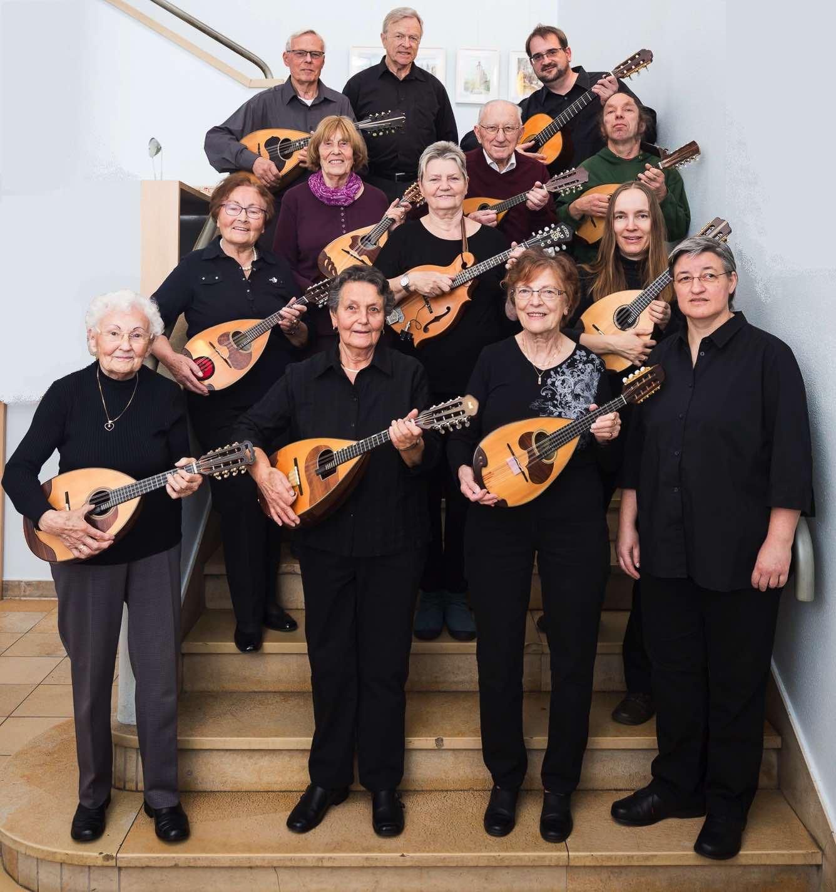

Braunschweiger Mandolinenverein 1912
Musikalische Leitung: Ruth Hannemann
Wir suchen noch neue MitspielerInnen (Mandoline, Gitarre, Bass oder ähnliche Zupfinstrumente) und Leute, die diese Instrumente lernen möchten!
|
 Foto: Björn Küssner |
Braunschweiger Mandolinenverein 1912
Kontakt (Impressum, Datenschutz)